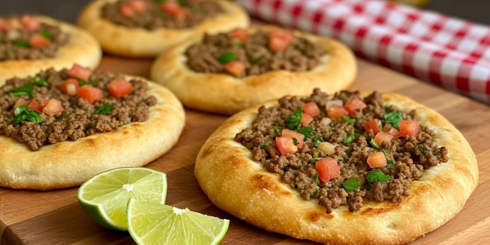

Salgados · Massas fritas/assadas
Sfiha

Ingredientes
- 3 ½ xícaras de farinha de trigo
- ½ colher (sopa) de açúcar
- 1 colher (chá) de sal
- 1 tablete de fermento biológico
- 1 xícara de água morna
- 1 colher (sopa) de manteiga
- 1 cebola picada
- 1 dente de alho
- 300 g de carne moída
- Sal e pimenta-do-reino a gosto
- 1 tomate
- 2 colheres (sopa) de salsa e cebolinha verde picadas
- 2 ovos cozidos picados
- Óleo para fritar a cebola e untar a assadeira
Modo de preparo
- Numa superfície lisa, peneire a farinha com o açúcar e o sal e faça um buraco no centro do monte.
- Dissolva o fermento em 1 xícara de água morna. Despeje o fermento e a manteiga derretida no centro do monte, mexendo delicadamente com um garfo até incorporar toda a farinha. Amasse formando uma massa lisa que solte das mãos. Deixe descansar em local protegido por 30 minutos.
- Enquanto isso, frite a cebola e o alho amassado em 1 colher (sopa) de óleo até ficar transparente.
- Junte a carne e cozinhe até dourar. Tempere a gosto. Junte o tomate, sem pele e sem sementes, picado, e cozinhe por mais 10 minutos.
- Retire do fogo e acrescente a salsa, a cebolinha e os ovos picados.
- Preaqueça o forno em temperatura média (180 °C). Pegue porções da massa, coloque na palma da mão e abra, formando rodelas de 8 a 10 cm de diâmetro. Coloque as rodelas em uma assadeira untada com óleo e ponha 1 colher (sopa) do recheio sobre cada rodela. Leve ao forno por 15 a 20 minutos, até as sfihas ficarem ligeiramente douradas nas bordas. Deixe esfriar e congele.
Observação
Com esta mesma massa você pode fazer sfihas fechadas: recorte a massa em quadrados, distribua o recheio e dobre formando triângulos. Outros recheios também servem, como ricota ou verdura. Congelamento: leve as sfihas ao freezer, sem cobrir, até ficarem duras; embale, uma a uma, em filme plástico, etiquete e congele. Se quiser congelar a massa sem recheio, é só preassar a massa, congelar as rodelas e embalar em filme plástico. Descongelamento: diretamente no forno.